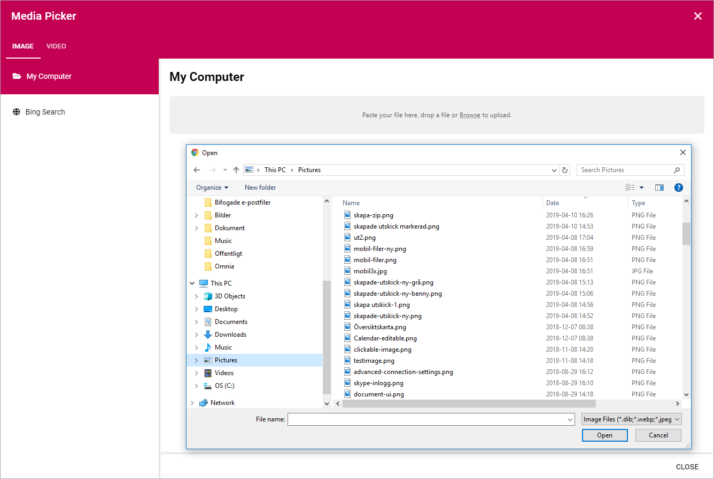
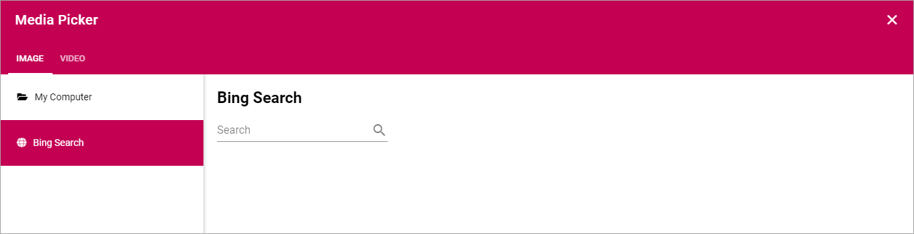
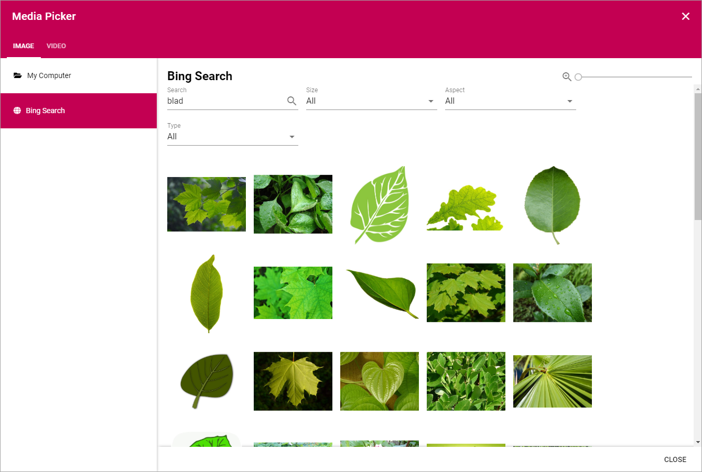
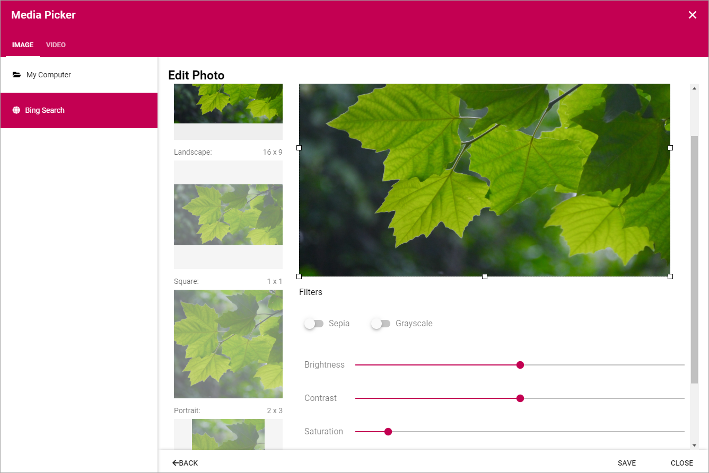
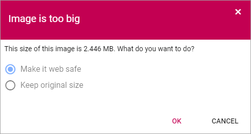
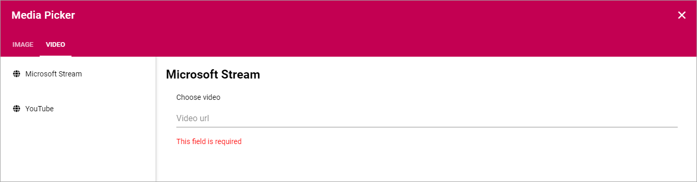
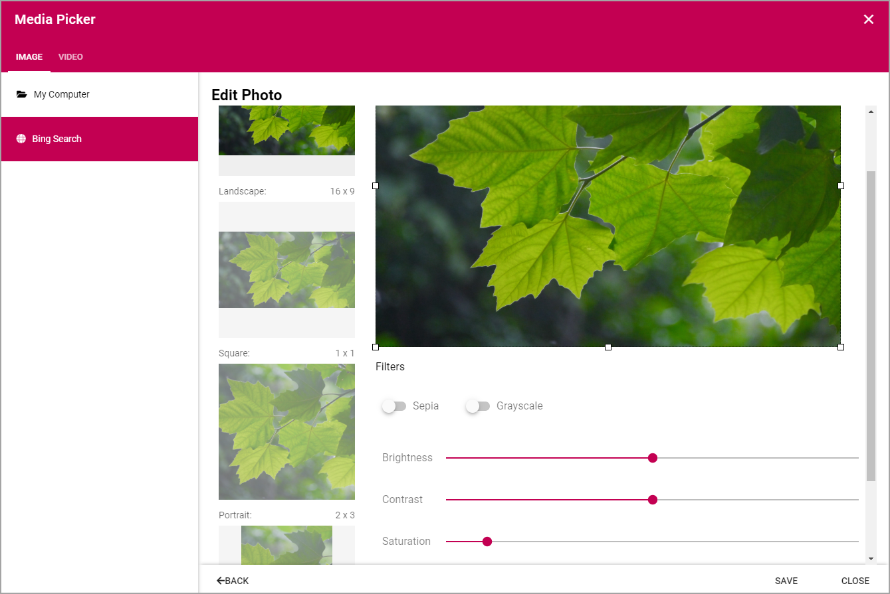

Media Picker¶
The Media Picker can be used to add an image or a video to a block or to the page content. Any image on the editor’s computer can be selected, as well as from any central image location registered in Omnia Admin. An image can be pasted from the clipboard as well. Besides that Bing can be used to find images. Regarding Bing, only images that are free to use and share will be available.
Videos can be selected from your company’s Stream in Office 365, or from YouTube.
When the Media picker starts, the following is shown:

Image¶
The first step is to select an image and then some basic settings can be made, see below.
My Computer¶
Select “My Computer” to either paste an image from the clipboard or to browse for an image.
Bing Search¶
When selecting “Bing Search” you can search for any Bing image, or use the predefined search categories, if any is set up. Bing search categories can be set up by an administrator in Omnia Admin.
When a bing search has been conducted, something like the following is shown:
- Search: Use this field to conduct a new search.
- Size: Use this field the filter the search result on size; Small, Medium, Large, Wall paper, All.
- Aspect: Here you can filter on the image format; Square, Wide, Tall, All.
- Type: Use this to filter on image type; Clipart, Line, Photo, All.
To select an image, double click or select the image and click “SELECT”.
Settings for an image¶
When the image has been selected, the following settings can be made:
- Custom: Set a custom shape using the eight squares as handles. Just draw to the desired shape. When a custom image is used in a page image area the full width of the area is used and the height of the area is adapted.
- Landscape: Click the Landscape preview and use the selection on the image to decide wich part of the image to show when it’s used in landscape format.
- Square: Click the Square preview and use the selection on the image to decide wich part of the image to show when it’s used in square format.
- Filters: Use the filters to adjust the image; Sepia coloring, Grayscale coloring, Brightness, Contrast and Saturation.
Don’t forget to save your changes when you’re done.
Images that are too big¶
If a user uploads an image that is too big, a warning is shown and the user can select to make the image “Web safe”, that is downsized to the the maximum size for images set, or keep the original size.
The setting for maximum image size is set in Omnia Admin.
Video¶
For Video, select either “Microsoft Stream” for your company’s Office 365 Stream, or “YouTube”.
Here’s how to add a video:
- Go to the video.
- Copy the Url for the video.
- Paste the Url here.
Now the following settings are available:
- Start at: If the video should not start at the beginning, set when it should start. Use the format minutes:seconds.
- Autoplay: If the video should start automatically when a user opens the page, select this option.
- Show info: If the information about the video should be shown, select this option.